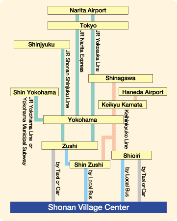
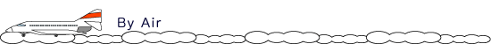
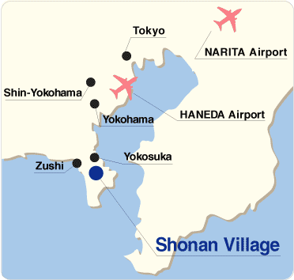
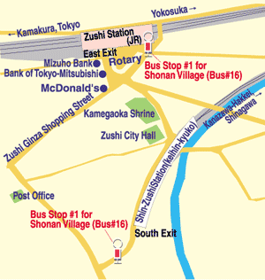
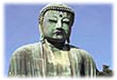
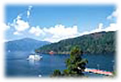

 |
 |
| Shonan Village Center, in the city of Kanagawa, which is situated approximately 50 km south- west of Tokyo. The center is located on a hill commanding a view of Mt. Fuji and overlooking Sagami Bay. |
 |
| Tokyo-Narita airport is the nearest international airport to Kanagawa. |
|
From Tokyo-Narita airport - by JR Sobu-Yokosuka Line Rapid Train ('Airport Narita'). Get off at Zushi station (journey time is approximately 2 hours and a half). From JR Zushi Station, take Keikyu bus no. 16. Get off at Shonan Kokusaimura Center Mae. (approximately 30 min.).
- by JR Narita Express. Change at Yokohama station to JR Yokosuka Line. Get off at Zushi station (approximately 2 hours). From JR Zushi Station, take Keikyu bus no. 16. Get off at Shonan Kokusaimura Center Mae. (approximately 30 min.).
- Take a bus from Narita airport to Yokohama City Air Terminal (YCAT) .
Change at Yokohama station to JR Yokosuka Line no.9 (Train for Zushi or Kurihama). Get off at Zushi station(approximately 2 hours). From JR Zushi Station, take Keikyu bus no. 16. Get off at Shonan Kokusaimura Center Mae. (approximately 30 min.).
YCAT: Timetable
http://www.ycat.co.jp/en/narita.html
From Tokyo - by JR Yokosuka Line. Get off at Zushi Station (about 60 min. from Tokyo station). From JR Zushi, take Keikyu bus no. 16. Get off at Shonan Kokusaimura Center Mae. (approx. 30 min.).
- by JR Shonan-Shinjuku Line. Get off at Zushi Station (60 min. from Shinjuku station). From JR Zushi, take Keikyu bus no. 16. Get off at Shonan Kokusaimura Center Mae. (approx. 30 min.).
- by Keihin Kyuko (Keikyu) Line. Get off at Shin-Zushi or Shioiri station. (50 min. approx. from Shinagawa station). From Keikyu Shin-Zushi or Shioiri stations, take Keikyu bus no. 16. Get off at Shonan Kokusaimura Center Mae. (approx. 30 min.).
From Haneda airport - by Keikyu Haneda Airport Line. Change at Keikyu Haneda station to a train heading for Yokohama. Get off at Shin-Zushi or Shioiri station (60 min. approx. from Haneda airport). From Keikyu Shin-Zushi or Shioiri station, take Keikyu bus no. 16 for Shonan Village. Get off at Shonan Kokusaimura Center Mae. (approx. 30 min.).
From Shin-Yokohama - by JR Yokohama Line. Change at Yokohama station to JR Yokosuka Line. Get off at Zushi station. (50 min. approx. from Shin-Yokohama station). From Zushi station take Keikyu bus no. 16 for Shonan Village. Get off at Shonan Kokusaimura Center Mae. (approx. 30 min.).
|
Japan Rail : http://www.japanrail.com/
East Japan Railway Company : http://www.jreast.co.jp/e/ |
|
 | from either JR Zushi or Keikyu Shin-Zushi station. - Take bus no. 16 for Shonan Village, which leaves from bus stop number 1 at both stations (approx. 30 min.). A one way bus ticket costs JPY 340.
from Keikyu Shioiri station. - Take bus no. 16 for Shonan Village, which leaves from bus stop number 2 (approx. 35 min.). A one way bus ticket costs JPY 380
Bus Time Table
|
|
Some places of interest in the area are:
* Kamakura(ancient capital of Japan)and its Great Buddha(Kotoku-in or Daibutsu ) |
 | |
* Hakone: Hakone is part of the Fuji-Hakone-Izu National Park. It is famous for its hot springs and the view of nearby Mt. Fuji. |
 | |